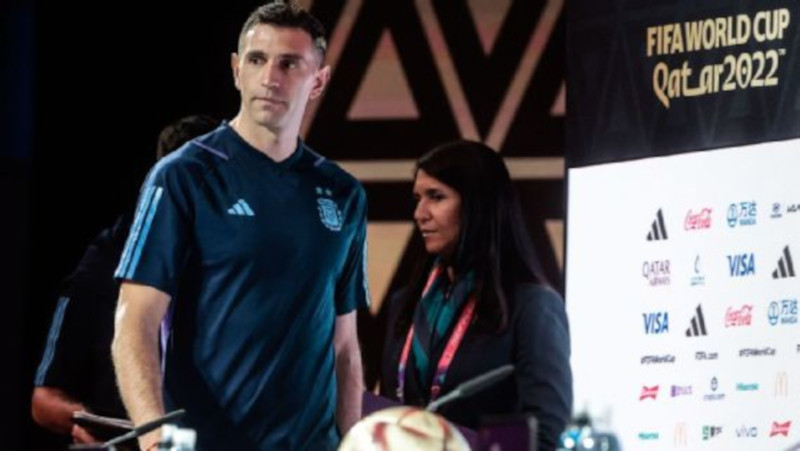

Durante muitos anos, Lionel Messi viveu às rusgas com os torcedores da Argentina. Era chamado de pecho frío, expressão em espanhol usada para se referir aos jogadores que não atuam com paixão e que não sentem o "calor" de vestir uma camiseta pesada de clube ou seleção. Diziam que ele era espanhol, pelos muitos anos vivendo em Barcelona desde a adolescência. Reclamavam que não cantava o hino, que não brigava com o árbitro, que não empurrava o time na hora difícil. Apesar dos muito títulos a nível de clubes, o gênio era visto como símbolo dos fracassos da Albiceleste nos grandes torneios.
Tudo começou a mudar em 2 de julho de 2019.
Na ocasião, a Argentina foi eliminada pelo Brasil na semifinal da Copa América, no Mineirão, com os jogadores da equipe derrotada ficando extremamente insatisfeitos com a arbitragem do equatoriano Roddy Zambrano, além da equipe do VAR.
Na área de entrevistas, todos esperavam que Messi falasse, mas aguardavam também que desse suas famosas entrevistas em tom ameno, dizendo que estava muito triste com mais uma decepção com a seleção, mas que a vida era assim mesmo, que não havia o que fazer, etc.
Ao ver o microfone à sua frente, porém, o camisa 10 soltou fogo.
Em um desabafo nunca antes visto, reclamou que dois pênaltis não foram dados para a Argentina e que o Brasil havia sido favorecido pela arbitragem. Disparou ainda que o país "controlava a Conmebol" e que a entidade sul-americana estava fazendo de tudo para dar o título à equipe de Tite.
Em entrevista neste sábado (17), antes da final da Copa do Mundo contra a França, o goleiro da Argentina, Emiliano Martínez, falou grosso ao comentar o favoritismo que vem sendo atribuído aos Bleus antes da grande decisão no Estádio Lusail, neste domingo (18), às 12h (de Brasília).
Martínez lembrou a final da última Copa América, em que o Brasil também era apontado como provável campeão, para rebater as previsões.

Audios